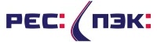
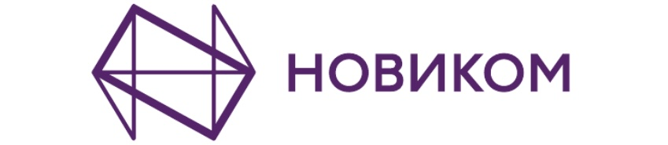

Summary
Results-driven professional with 15 years of experience in corporate communications. Skilled in creating and implementing strategies at the intersection of HR, PR, Marketing, and IT that boost company business outcomes. Proven track record in managing cross-functional teams, inspiring internal communications, and enhancing employee engagement through newsletters, communities, and relevant digital content. Strong background in public relations and event planning as a communications manager for 7 years at Deutsche Bank. Advanced in tools like Microsoft Office, SharePoint, Adobe Creative Suite, and project management platforms such as Asana and Trello. Fluent in English and Russian, with intermediate proficiency in Japanese.
Skills
- Corporate Communications Strategy
- Intranet Maintenance & Development
- Public & Media Relations
- Employee Engagement & Internal Communication
- Event Planning & Execution
- Digital Content & Copywriting
Experience
Intranet Manager - PEC Transportation Holding
March 2023 - September 2023 | Moscow, Russia
- Enhanced employee engagement through communication strategies for 12,000+ employees.
- Revamped intranet UI, prototyped HR services, and launched a merchandise shop.
- Spearheaded diversity programs, increasing eNPS by 20%.
Intranet and Community Manager - X5 Retail Group
October 2020 - February 2023 | Moscow, Russia
- Managed internal communication for 350,000 employees across 15 business units.
- Integrated five SharePoint intranet platforms into one in-house solution.
- Used data-driven insights to enhance employee engagement.
Internal Communications and Event Manager - Novikom Bank
September 2018 - March 2020 | Moscow, Russia
- Created digital content for internal communications in Canva, connecting 1,300 employees via newsletters and intranet.
- Planned and conducted up to 30 events annually, driving employee involvement in corporate life.
- Streamlined learning and development systems, maintaining and updating 50+ courses annually.
PR, Communications and Marketing Manager - Deutsche Bank
June 2010 - January 2017 | Moscow, Russia
- Managed up to 50 press inquiries monthly, ensuring accurate and timely responses.
- Created bilingual content for newsletters, press releases, and internal channels.
- Organized corporate and CSR events, improving employee satisfaction.
Education
Bachelor's Degree in Engineering - State Polytechnic University (2004-2009)
Pedagogical Diploma - Moscow Academy of Professional Competencies (2020)
Development and Affiliations
- Front-End Development by Google
- Networking via UpwardlyGlobal
- Volunteer at West Harlem Group Assistance